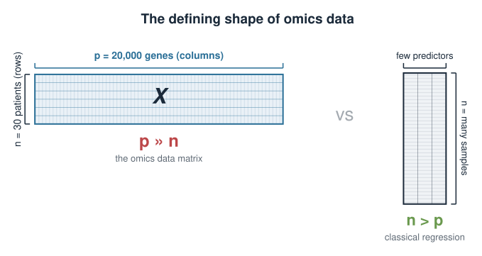
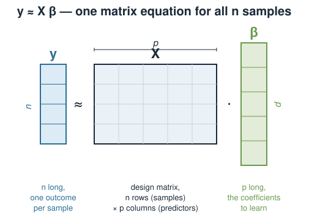
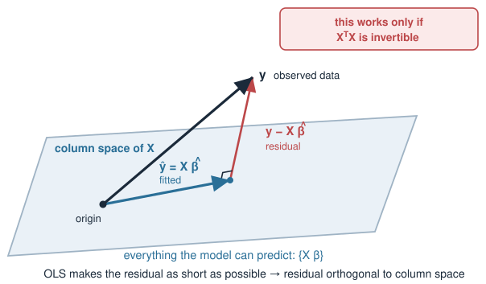
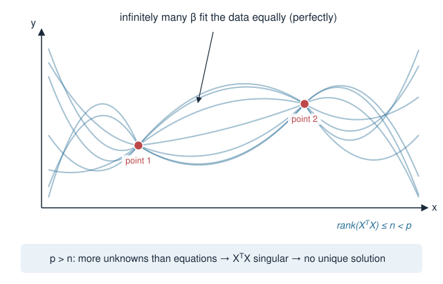
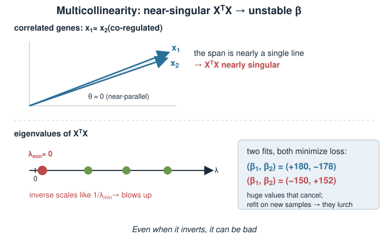
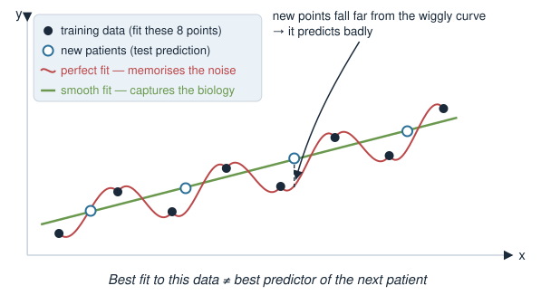
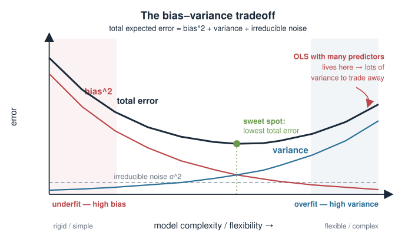
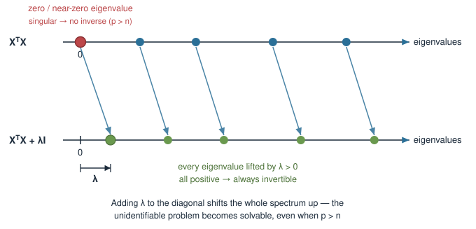
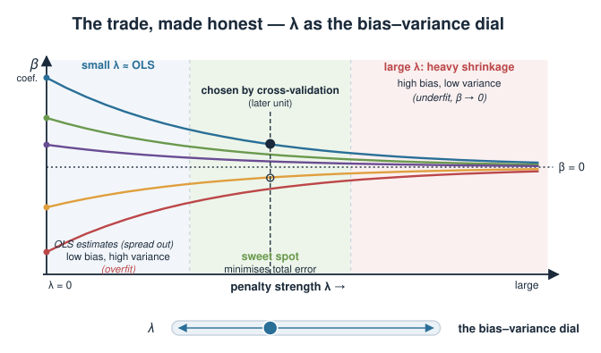

This block is provisional. Depending on how the syllabus settles, “Penalized linear models” may move to a later statistics / machine-learning course. Treat it as a bridge from the linear-algebra block into modelling, not as a fixed exam topic.
In the linear-algebra block we learned how to solve a linear system and when a solution is unique. Today we ask a harder question: what do we do when the honest least-squares answer is either impossible to compute or untrustworthy?
Why fitting many genes from few samples (p ≫ n) breaks ordinary least squares.
The bias–variance tradeoff: why the “best fit to this data” is often a bad predictor.
The core idea of penalization — pay a price for large coefficients to buy stability.
This is a concept day: no formulas to grind, one idea to internalise.
A biology picture first
A typical transcriptomics experiment: measure the expression of 20,000 genes across 30 patients, and predict a clinical outcome (say, drug response) from expression.
Each patient is one row; each gene is one column (a predictor).
You want a linear model: outcome \(\approx \beta_1 g_1 + \beta_2 g_2 + \dots + \beta_p g_p\).
You have 30 equations (patients) but 20,000 unknowns (the \(\beta\)’s).
There are vastly more predictors than samples. This is the defining shape of omics data, and ordinary regression was never designed for it.

Recall: the linear model
A linear model predicts an outcome \(y\) from predictors as a weighted sum:
\(\boldsymbol{\beta}\): the coefficients we want to learn (\(p\) long).
You have used this as lm() in the statistics block. Today we look underneath it.

What least squares wants
We can’t hit \(\mathbf{y} = X\boldsymbol{\beta}\) exactly (data is noisy), so ordinary least squares (OLS) picks the \(\boldsymbol{\beta}\) that makes the total squared error smallest:
Everything hinges on that inverse: we can only solve for \(\boldsymbol{\beta}\)if \(X^\top X\) is invertible.

When p > n, the inverse does not exist
\(X^\top X\) is a \(p \times p\) matrix, but it is built from only \(n\) samples. A basic fact of linear algebra:
\[\text{rank}(X^\top X) \le n\]
So when \(p > n\) (more genes than patients), \(X^\top X\) is a \(p\times p\) matrix of rank at most \(n < p\) — it is singular. It has no inverse.
There is no unique least-squares solution — infinitely many \(\boldsymbol{\beta}\) fit the data equally (perfectly) well.
The model is unidentifiable: the data cannot pin down the coefficients.

Even when it inverts, it can be bad
Suppose \(p < n\), so \(X^\top X\)is invertible. You are still not safe if predictors are correlated — which genes always are (co-regulated pathways, batch structure).
Correlated columns make \(X^\top X\)nearly singular (an eigenvalue close to 0).
Inverting a nearly-singular matrix amplifies noise: tiny changes in the data cause huge swings in \(\hat{\boldsymbol{\beta}}\).
The fitted coefficients become large, unstable, and hard to interpret — often big positive and negative values that cancel.
This is multicollinearity, and in genomics it is the rule, not the exception.

The real goal: prediction, not perfect fit
It is tempting to want the \(\boldsymbol{\beta}\) that fits this dataset best. But we almost never care about this dataset — we care about the next patient.
A model with enough free parameters can fit the training data perfectly, noise and all.
That model has learned the noise, not the biology — it overfits.
On new patients it predicts badly, because the noise it memorised won’t repeat.
The best fit to the data at hand is often the worst predictor of new data.

The bias–variance tradeoff
Prediction error decomposes into two competing parts:
Bias — error from the model being too rigid to capture the true pattern. (Underfitting.)
Variance — error from the model being so flexible it chases noise, changing wildly from sample to sample. (Overfitting.)
OLS with many predictors is a low-bias, high-variance machine: flexible enough to fit anything, so unstable it generalises poorly. We can often lower total error by accepting a little bias to cut variance a lot.

The idea: penalize large coefficients
Instead of minimising only the fit error, add a penalty that grows with the size of the coefficients:
\[\hat{\boldsymbol{\beta}} = \arg\min_{\boldsymbol{\beta}} \ \underbrace{\|\mathbf{y} - X\boldsymbol{\beta}\|^2}_{\text{fit the data}} \;+\; \lambda\underbrace{\,\text{(size of }\boldsymbol{\beta}\text{)}}_{\text{stay small}}\]
The first term still rewards fitting the data.
The second term punishes large coefficients. \(\lambda \ge 0\) sets how hard.
The fit now has to justify every unit of coefficient it uses against the penalty.
We deliberately move away from the perfect-fit solution to buy stability.
What the penalty buys, geometrically
Two ways to see why shrinking coefficients helps:
It fixes the inverse. The penalized normal equations replace \(X^\top X\) with
\[X^\top X + \lambda I\]
Adding \(\lambda\) to the diagonal lifts every eigenvalue by \(\lambda > 0\), so the matrix is always invertible — even when \(p > n\). The unidentifiable problem becomes solvable.
It calms the variance. Shrinking coefficients toward zero makes them less sensitive to noise in any one sample. Estimates stop swinging.

The trade, made honest
Penalization is not free. By pulling coefficients toward zero we introduce bias: the estimates are systematically shrunk, so they no longer match the true values on average.
Small \(\lambda\): close to OLS — low bias, high variance (overfits).
Large \(\lambda\): heavy shrinkage — high bias, low variance (underfits, coefficients near 0).
Somewhere in between minimises total prediction error.
Choosing \(\lambda\) well (e.g. by cross-validation, in a later unit) is the whole game.

Biological payoff
Why this matters for the wide, short omics matrix we started with:
Solvable at all. With \(p \gg n\), penalization is what makes a gene-expression predictor computable in the first place.
Stable signatures. Shrinkage gives coefficients that don’t flip sign when you swap a few patients — reproducible gene signatures.
Better prediction on held-out patients, which is what a clinical model is for.
Some penalties select genes. One flavour (coming in a later unit) drives most coefficients exactly to zero, yielding a short, interpretable gene list.
A first look in R
You have used lm() for ordinary least squares. Penalized models use glmnet, which fits along a whole range of \(\lambda\) at once:
# ordinary least squares -- fails or overfits when p >> nfit_ols <-lm(response ~ ., data = expr)# penalized regression (ridge / lasso) with glmnetlibrary(glmnet)x <-as.matrix(expr[, genes]) # n samples x p genesy <- expr$responsefit_pen <-glmnet(x, y, alpha =0) # alpha = 0 is ridge; alpha = 1 is lasso
Don’t worry about the details yet — later units unpack alpha, the \(\lambda\) path, and choosing \(\lambda\) by cross-validation. Today only the idea matters.
Link back to the linear-algebra block
Everything today rested on machinery you already built:
From the linear-algebra block
Used here
Solving \(A\mathbf{x}=\mathbf{b}\), unique vs. infinite solutions
when OLS has no unique \(\hat{\boldsymbol\beta}\)
Rank and singular matrices
why \(p>n\) makes \(X^\top X\) non-invertible
Matrix inverse
the normal equations \(\hat{\boldsymbol\beta}=(X^\top X)^{-1}X^\top\mathbf{y}\)
Eigenvalues near zero
why correlated genes make the inverse explode
Adding \(\lambda I\) shifts eigenvalues up
why the penalty restores invertibility
Penalized regression is applied linear algebra with a statistical purpose.
Summary
Idea
Takeaway
p ≫ n biology
omics has many genes, few samples
OLS solution
\(\hat{\boldsymbol\beta}=(X^\top X)^{-1}X^\top\mathbf{y}\) — needs an invertible \(X^\top X\)
Hard failure
\(p>n\) ⇒ \(X^\top X\) singular ⇒ no unique solution